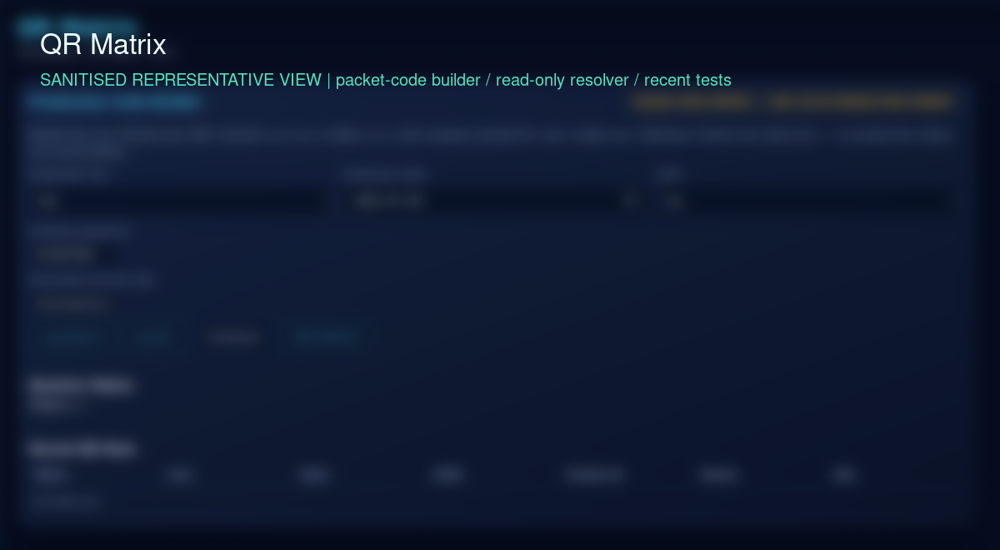
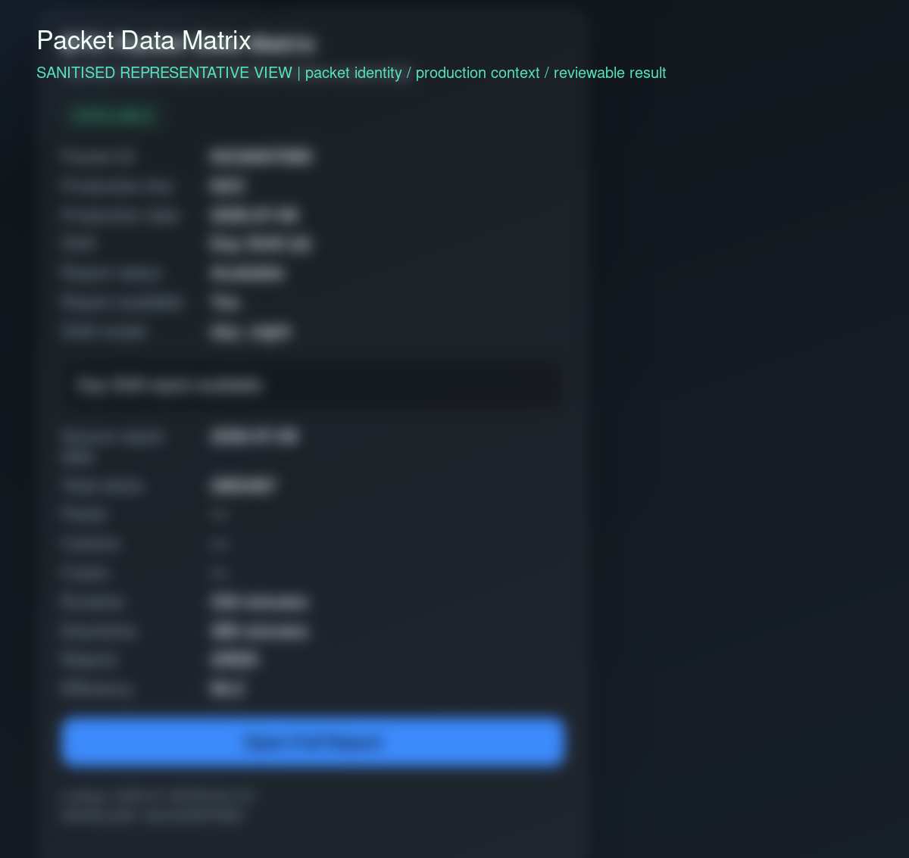

QR Traceability System
A controlled QR and Data Matrix workflow for identifying production packets, resolving their operational context and presenting a reviewable result to mobile or browser users.
PROJECT OVERVIEW
The system treats a QR or Data Matrix value as an identity input, not as the whole answer. The maintained workflow normalizes a packet code, resolves its context, classifies the state and exposes a result that can be reviewed by an operator or field user.
The public demonstration is intentionally client-side and synthetic, while the implementation themes are grounded in the QR resolver and mobile integration surfaces.
THE PROBLEM
A scanned code is useful only when it maps to the correct packet context and when unresolved, pending or incomplete states are not presented as successful results. The engineering problem is to preserve packet identity, date/context ownership and validation boundaries across scanning, API lookup and presentation.
HOW IT IS USED
A user scans or enters a packet code in the mobile workflow. The client sends the normalized identity to the resolver, receives a controlled response and presents the packet context and state. When the authoritative report boundary is not satisfied, the workflow remains pending or unresolved rather than showing invented totals. The browser demo mirrors this decision pattern with synthetic IDs only.
PROJECT EVIDENCE
Sanitized screenshots from the working system show the relationship between packet identity construction and resolver output. They demonstrate workflow shape and review boundaries without publishing real packet identifiers, production values or backend details.


HOW IT WORKS
A mobile scan produces a packet ID, the API boundary resolves context, validation determines whether the result is authoritative, and the client renders a clear state for the next human decision.
ENGINEERING HIGHLIGHTS
- Packet identity remains tied to the scanned code rather than a clock-selected or UI-selected date.
- Normalization keeps equivalent code representations on one controlled lookup path.
- Unknown, not-found, offline and pending states remain distinguishable from a validated match.
- The public resolver demo uses synthetic data and does not call a private API.
CURRENT CAPABILITIES
- QR and Data Matrix packet-code presentation and scanning workflow.
- Controlled packet lookup through the application API boundary.
- Exact packet-context and report-date fields in the resolver contract.
- Fail-closed pending behavior when an authoritative completed report is unavailable.
- Local synthetic browser demonstration for known and unknown example IDs.
POTENTIAL / NEXT APPLICATIONS
Could be extended to provide an approved authoritative offline packet cache and stronger cross-field consistency checks. Potential applications include controlled recall review, quality evidence lookup and warehouse handover workflows. The architecture could be adapted for other traceability identifiers after the source-of-truth, retention and access rules are approved.
TECHNOLOGY
Verified project-specific stack: QR / Data Matrix, Android / Kotlin scanning client, Python / Flask API services, Retrofit / REST integration, SQLite-backed operational data and local JavaScript demonstration code.
LIMITATIONS / PRIVACY
The public demo uses representative packet IDs only. No real records, identities, production totals, private endpoints, cryptographic signing, blockchain or public tracking feature is claimed. Android physical-device acceptance and a live factory scan are not presented as completed evidence.
RELATED PROJECTS / LINKS
Synthetic packet lookup
Runs entirely in the browser using synthetic packet IDs. It does not call a private API or expose a production record.
Other valid example: DEMO-PKT-2088. Unknown IDs remain visibly unresolved.
Pair packet identity with the field workflow that makes it useful.
RELATED: ANDROID OPERATIONS